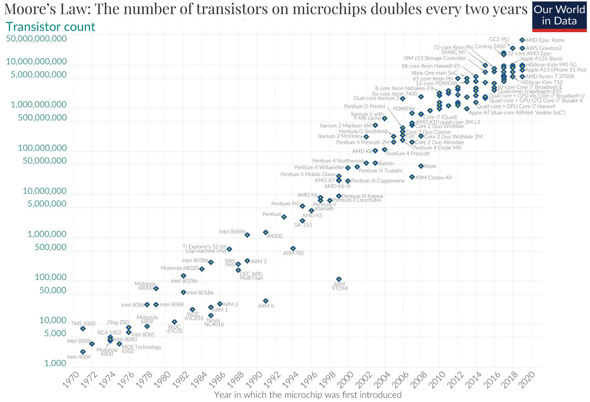
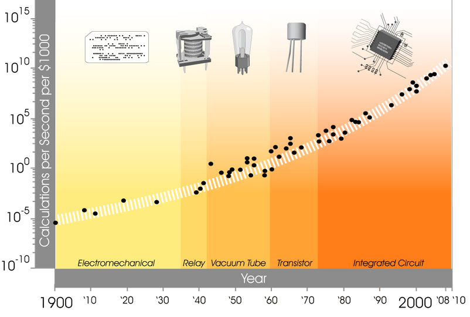
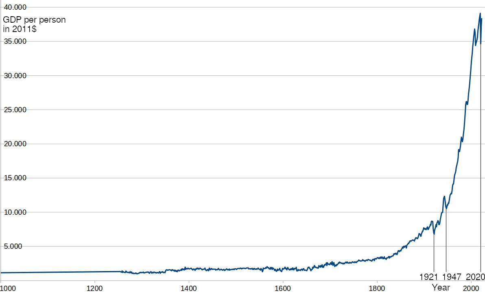

2. Accelerating Progress
2.2 Moore's Law
Let us now turn to the core of this chapter: progress. It, too, is an example of exponential growth.
We begin our examination with a special case: Moore's Law. It describes how quickly computer chips become better/more complex.
Moore's Law states that the number of transistors* per computer chip approximately doubles every two years.

Many positive feedback loops in manufacturing processes led Moore to this rule of thumb. It has proven so accurate that it is now referred to as a "law". In a way, it became a self-fulfilling prophecy because the entire industry accepted these targets and aligned their planning accordingly.
However, we won’t delve deeper into why the number of transistors grows exponentially. Instead, we’ll revisit where the limits of this growth function lie. When will the number of transistors per chip no longer be able to double?
Estimation of remaining doublings: Currently, we are capable of producing transistors as small as 3nm (nanometers). Transistors are made of silicon, and a silicon molecule is about 0.2nm in size. Thus, transistors are already so small that they are only a few molecules thick (about 15).
For every doubling of the number of transistors per area through smaller transistors, their diameter must shrink by a factor of √2 (approximately 1.4). With 4 such doublings in 8 years, we would then reach a thickness of 4 molecules (at a transistor size of 0.8nm), and about there it would come to an end. However, transistor sizes are already no longer shrinking fast enough to fulfill Moore's Law through that alone. Instead, manufacturers have started arranging transistors more densely and stacking multiple chip layers vertically, building the chip in three dimensions rather than in two.[9]
How far could this be pushed? It largely depends on heat dissipation how many layers can be stacked on top of each other. Without smaller structures, more transistors also consume proportionally more power. The processors in laptops and servers already consume a lot of energy, so there isn’t much room left. Assuming a factor of 8, this would allow for 3 more doublings, totaling 7 (4 from shrinking + 3 from stacking).
By 2038, a chip of the same size would then have 128 (27) times as many transistors as today. However, it would also consume 8 times as much power.
Without a change in base technology (such as optical computers or quantum computers), the possibilities will be exhausted after 7 more doublings—in 14 years.
The key point in determining whether this prediction of the end of chip acceleration will come true is the stated limitation: “Without a change in base technology”. How likely is that? With what we know so far about Moore's Law, we can only shrug and say, “Who knows, I’m not a prophet.”
Since we cannot directly see into the future, let’s instead look into the past. And try to estimate the future from it. How often have there been complete changes of technology in computing? At what intervals have they occurred?
For this, there is a great chart by Kurzweil, showing the number of calculations per second per $1000 from 1900 to 2010.

We have here the following changes in base technology: Electromechanical / Relay / Vacuum / Transistor / integrated circuit (in the integrated circuit, the transistor is no longer an independent component). Across these changes, the exponential increase in computing power for constant cost has been maintained. Even in the following 15 years, this growth has remained unchanged.[11]
Based on this ever-accelerating increase in computational capacity across changes of base technology, Kurzweil has identified a constant acceleration of technological progress.
Intuitively, I immediately want to agree with him, simply based on what I have personally experienced and know about the past. However, focusing solely on the increase in computing power to conclude that seems insufficient. The data for this only goes back to 1900, and perhaps exponential growth is just a special case for this period and for computational operations?
But how else can we meaningfully measure this? Simply counting inventions doesn’t help: inventions can be arbitrarily grouped or split up, leading to completely different numbers.
What is technological progress, what are inventions? It is the improvement of the means to solve a problem. Whether that is producing something more efficiently, devices for better measurement, cheaper power for machines, or weapons for more successful combat. Ultimately, they are all tools that serve a purpose. And with better tools, humans become more efficient. One way to quantify progress is to look at human efficiency or productivity. And this is something that is already measured: as Gross Domestic Product (GDP*), per capita, adjusted for inflation.
Here is a graph for Great Britain for the years 1000 to 2022, based on the provided dataset (simply because data for this country is available from the year 1000, it was one of the birthplaces of the scientific revolution, and has remained at the forefront of invention ever since):

I think, based on this graph, we can agree with Kurzweil and say: Yes, technological progress is indeed accelerating, growing exponentially (regardless of whether this will continue to apply specifically to computing power per dollar through new base technologies or not).
The limits of this growth would either be the collapse of civilization or an approach to the limits of what is physically possible. The latter, however, is not foreseeable yet, even based on the currently known laws of nature.